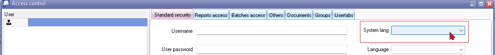

FIXED - Default language setting
Known issues - Default language setting
Changed from previous osFinancials4, osFinancials5 and TurboCASH5.2 (453) releases - Set the default language in a Set of Books - Could save the language with no user in each database in Setup → Access control.

In osFinancials5.1.0.227 you cannot set it by default if no users were added. Now you can only set the language for each user.
Currently you cannot set the default language in a Set of Books. When opening a Set of Books from the Bin Repository folder in TurboCASH5 or Download it from the download option in Let osFinancials help you to create a Set of Books (in both TurboCASH5 and osFinancials5.1.0.227), the System language in Setup → Access control is blank.

In Firebird and MSSQL database types cannot change the language on Setup → Access control (System language) and click the Apply button as the default language for the Set of Books. It reverts back to the original language e.g. Afrikaans if you change it to English.
The Set of Books will not open in the previous default language set in Previous versions of osFinancials5/TurboCASH5. It will open in a different language (e.g. English)
After opening the Sets of Books, you need to go to Switch language option (Start ribbon). The selected language will then be updated and displayed in Setup → Access control.